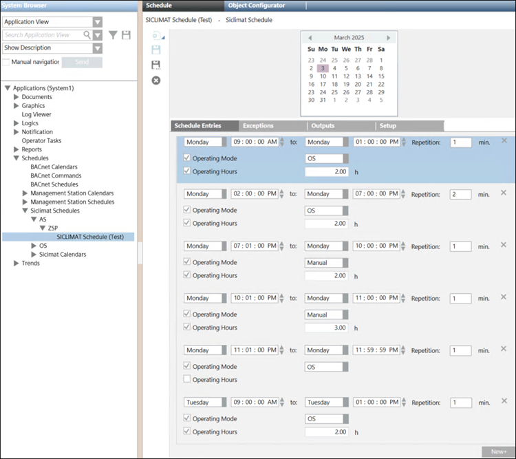
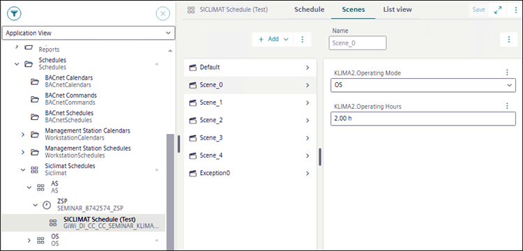
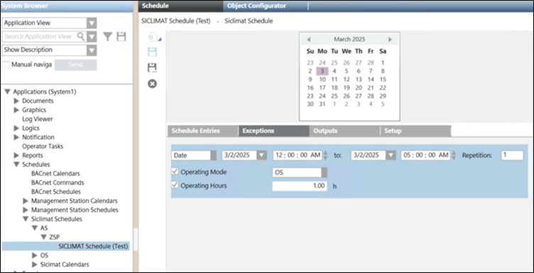

Installed Client to Flex Client Scene Conversion
This section provides information about conversion of the Desigo CC Installed Client's SICLIMAT Schedule entries into the Flex Client's Scene and Exception entries.
The Scenes and Exceptions are created based on the configured output property, repetition value, and the value of the output property.
New scenes are created in the following scenarios:
- If the schedule entry properties are different than the other.
- If one schedule entry has the same output property but different repetition value.
- If the output property or its value is different.
The following is an example of the different Schedule entries created in the Installed Client and its conversion into Scenes in Flex Client.


Scenario | Operating Mode | Operating Hours | Repetition | New Scene Created? |
1 | OS | 2 | 1 | Yes |
2 | OS | 2 | 2 | Yes |
3 | Manual | 2 | 1 | Yes |
4 | Manual | 3 | 1 | Yes |
5 | Manual | Not configured | 1 | Yes |
6 | OS | 2 | 1 | No |
For example, two output properties and repetition values are configured as follows:
- Scenario 1: Operating Mode - OS, Operating Hours - 2 , and Repetition - 1. For this entry, Scene_0 is created in the Flex Client.
- Scenario 2: Operating Mode - OS, Operating Hours - 2, and Repetition - 2. In this scenario, since Repetition value is different than the first entry, Scene_1 is created.
- Scenario 3: Operating Mode - Manual, Operating Hours - 2, and Repetition - 1. In this scenario, since Operating Mode is Manual, which is unique among the previous entries, Scene_2 is created.
- Scenario 4: Operating Mode - Manual, Operating Hours - 3, and Repetition - 1. In this scenario, since Operating Hours property is unique among the previous entries, Scene_3 is created.
- Scenario 5: Operating Mode - Manual, Operating Hours - not configured, and Repetition - 1. In this scenario, since Operating Hours property is not configured, which is unique among the previous entries, Scene_4 is created.
- Scenario 6: Operating Mode - OS, Operating Hours - 10, and Repetition - 1. In this scenario, all the properties and Repetition value is same as configured in scenario 1. Therefore new scene will not be created.
Exceptions
This section provides information about conversion of the Desigo CC Installed Client's SICLIMAT Exceptions into the Flex Client's Exceptions.

Type of Entry | Operating Mode | Operating Hours | Repetition | New Exception Created? |
|---|---|---|---|---|
Exception | OS | 1 | 1 | Yes |
As shown in the above table, if we have an exception entry, in which two properties are configured with Operating Mode - OS, Operating Hours - 1, and Repetition - 1. If all the properties and the repetition value is similar to the weekly schedule entry, the Exception_0 is created and utilized for the weekly schedule entry.
NOTE: If the exception properties and repetition value matches with the weekly schedule entry, the exception is created in the Flex client and it will suppress the scene creation in weekly schedule entry.